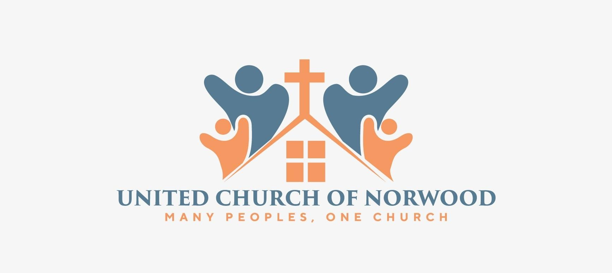
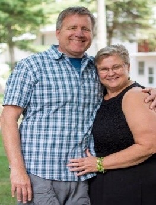
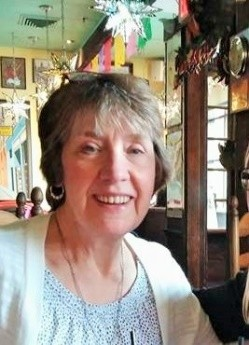
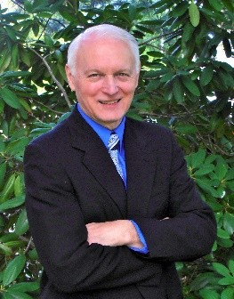
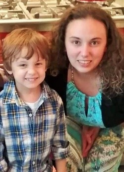
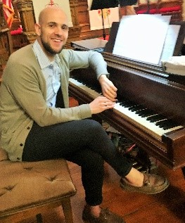
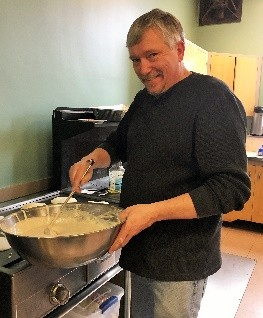

We are a Christ-centered, welcoming church family. Join us Sundays at 10 AM for worship, fellowship, and spiritual growth. Everyone is welcome here.
United Church of Norwood - Founded in the late 1800s, as a Unitarian Universalist congregation, there was a merger with a local Methodist congregation creating United Church. It's had influences from Methodist, Baptist, Evangelical, and Congregational backgrounds over the years, which is why we consider ourselves inter-denominational. Our worship contains both traditional and contemporary elements that reflect our unique history.
The United Church of Norwood, located in the center of Norwood Massachusetts, is now a proud partner church with the Evangelical Free Churches of America. Check them out at www.efca.org
We believe every part of the church body has a purpose. Our ministries are active in building community, deepening faith, and serving the world with compassion.
Responding to the needs of the community!
Creating meaningful worship experiences through music, praise, and multimedia. Open to vocalists and instrumentalists of all ages.
Safe, nurturing programs for children to explore faith through stories, songs, crafts, and interactive learning during Sunday services.
Providing for the needs of our church community -Making phone callls to those who are home-bound -Sending cards to those in the chuech bosy to le tthem know we are thinking of them .
WISH (Women in Service to Him) is a fellowship and service group open to all women in the church. Our mission is to be a light to the world by serving others, while nurturing our faith as Christian women. A variety of activities are held throughout the year, including fundraisers to support several Christian missions worldwide, as well to assist with local needs as they arise. We enjoy yearly brunches with our Spanish sisters and others, have craft activities and work bees, welcome guest speakers, share meaningful discussions, send cards of encouragement and more…all of which serve to bless our friendships and promote good will. Cindy Rudolph
Connecting people in homes and online for prayer, accountability, and deeper study of Scripture throughout the week.
United Church of Norwood is a welcoming, family-oriented church dedicated to growing in faith and serving our local and global neighbors through Christ's love.

Soon after starting his journey as a Christian, Pastor Kevin was inspired to go into ministry because of the caring and encouraging community of believers he experienced in his church. He has a Bachelor’s degree political science from Eastern CT State, a Master’s degree in international relations from UCONN, a Master’s degree in Church History from Gordon Conwell Theological Seminary, plus he has taken Christian Spirituality courses from various Protestant and Catholic learning institutions. He has served at churches, a Christian High School, and with the Southern New England Walk to Emmaus team over the years. His favorite book of the Bible to preach from is Paul’s Letter to the Romans. When he’s not busy with ministry at the church, he can be found spending time with his wife, daughters, and grandsons. He might also be found studying Biblical Greek, or on a canoe/kayak trip out in the New England wilderness.

Janna loves being able to see how people in the church can work together to allow different ministry areas to flourish. She began serving on staff at United Church of Norwood just under 10 years ago and has been active in our WISH and Faith Seeds ministries. Her favorite book on Christian living is a classic, first sold as a book of sermons back in 1896. “In His Steps” by Charles Sheldon challenges readers not to make choices without first asking the popular question “What would Jesus do?’. When Janna isn’t in the church office, it’s likely you’ll find her with her family, sewing, or at a local quilting shop .

As a composer, a scripture that inspires Steve is Psalm 40:3, "He put a new song in my mouth." The second part of the verse tells us that God did this so that "...many will fear and put their trust in the Lord." That is what Steve believes choir ministry is all about - using our music to point others to the Lord! Steve holds a degree in Music Education from Eastern Nazarene College. As a professional jazz pianist, he has performed extensively both in the U. S. and in Europe. Steve is also an author of children’s sermons which are currently used in over 150 countries around the world.

Rachel has had a passion for music and singing since she was a child. She first started singing in the church choir here at the age of 16, and has grown into the leader for our praise team. Her favorite praise song to lead the congregation in is “In Christ Alone”. She is a pastry chef by trade, graduating from the International Culinary Center in New York with a certificate in Pastry Arts. When she’s not preparing for worship or baking, she can be found spending time with her son or enjoying time with friends.

Chris loves being able to use his musical gifts to connect spiritually with the community. One of his biggest inspirations was JS Bach, who wrote and performed all music, whether sacred or secular, for the glory of God. Chris loves serving in an atmosphere where music is a tool for community and spiritual growth more than it is a spotlight for musical performance. He has a Bachelor’s degree in music performance and Composition from the Hartt School of Music, and a Master’s in composition from Tufts University. His favorite hymn to lead the congregation in in “The Church’s One Foundation”. When not rehearsing at the church he can be found teaching piano lessons, working at Ogawa Coffee in Boston, and trying to fit in a good run.

Staying connected to the great community at United Church of Norwood it Scott’s greatest motivation as he invests his time into caring for our building. He first started attending this church a number of years ago because he had heard about the exciting things his mom had to say about the church. His favorite church memory is from his first Sunday attending the service, when he is convinced God had the sermon prepared just for him to hear that day. When he has a chance to take time off from all of his various work duties, he loves to work on his motorcycle and take it out to enjoy our beautiful surroundings.
Address: 595 Washington St, Norwood, MA, United States
Email: unitednorwoodchurch@gmail.com
Phone: (781) 762-2589